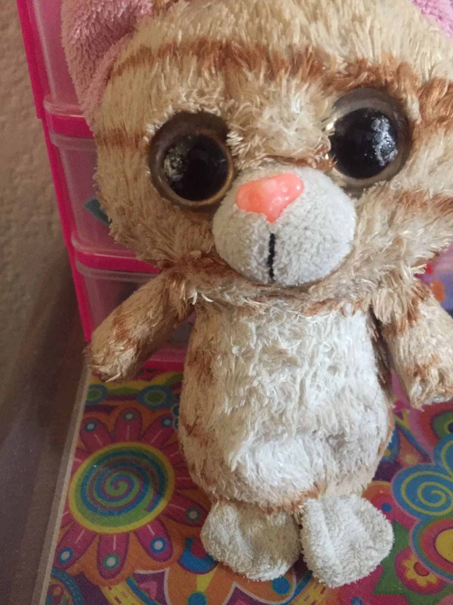
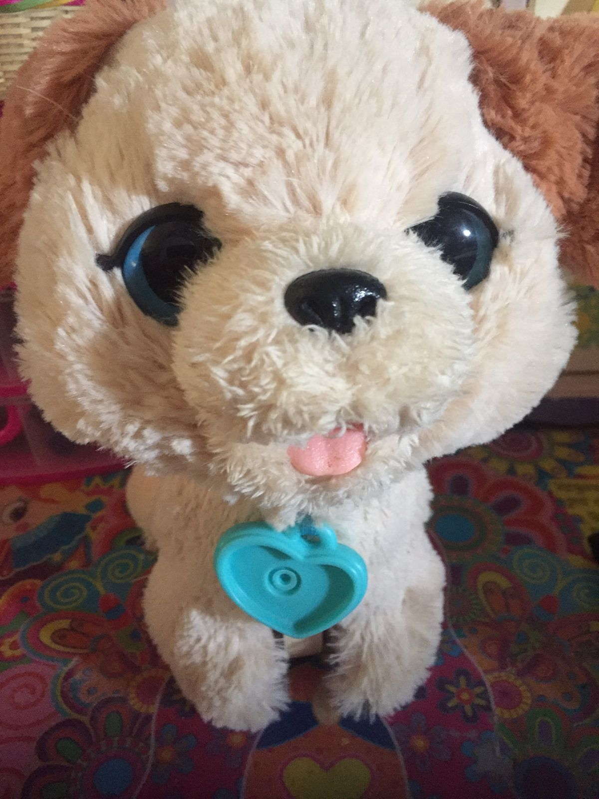
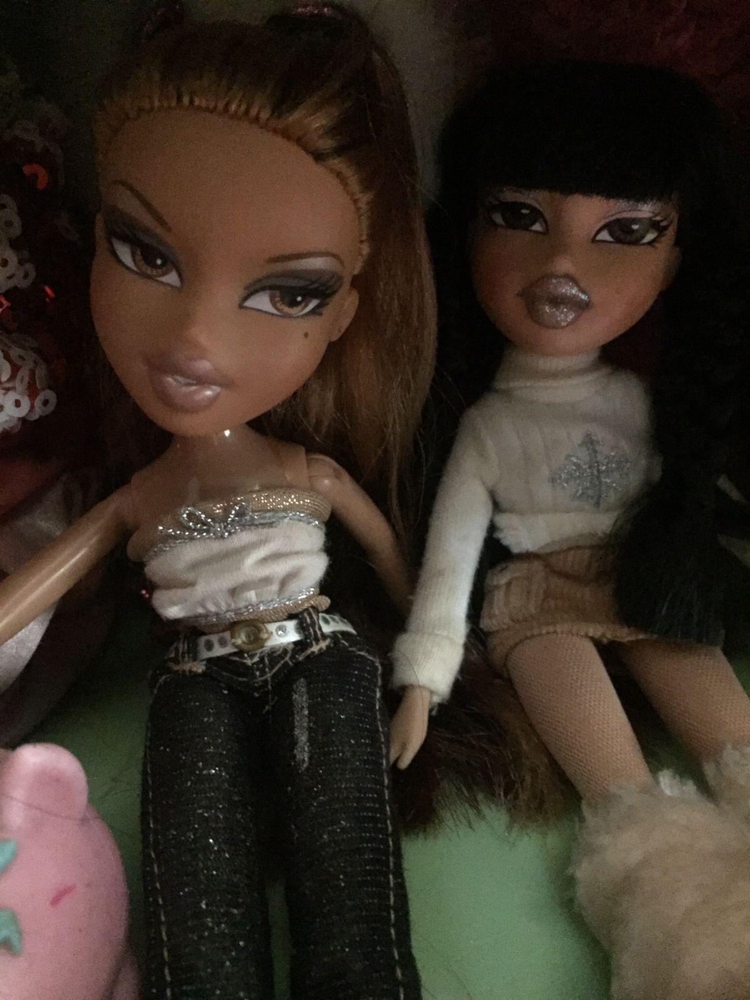
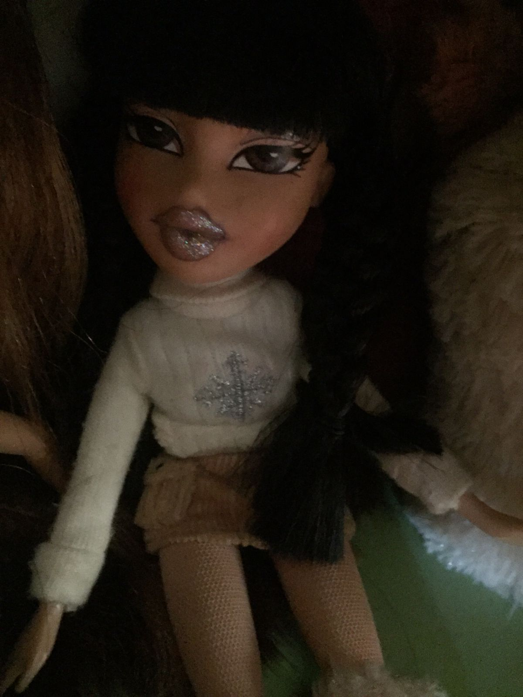
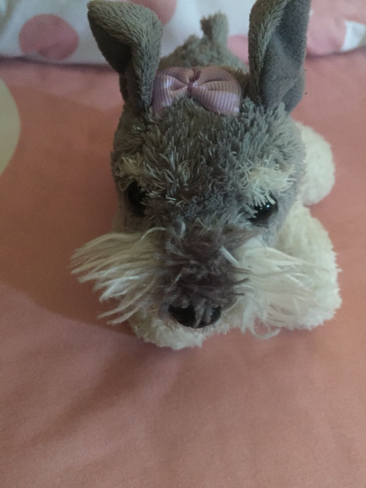
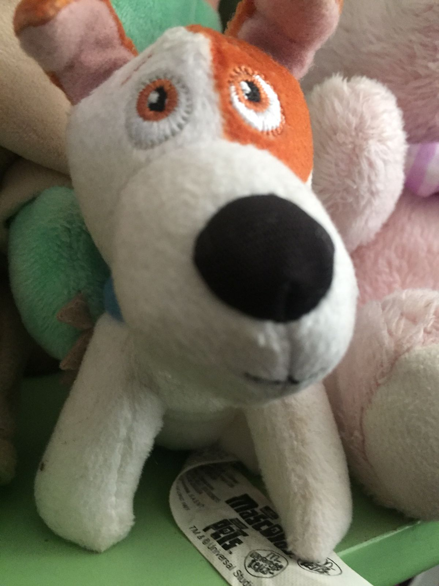
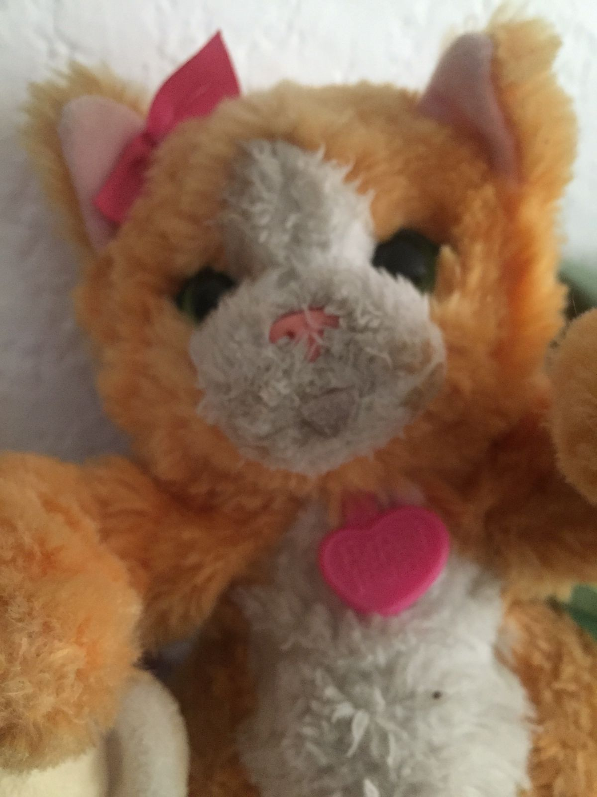

Obra de teatro
Obra de teatro: "Almas perrunas"
Personajes:
- Gatos
- Perros
- Chica que ayuda a los animalitos (Mich)
- Chica de la tienda
- Señoras y señores que donan
- Señoras y señores que donan
Primer Acto
*pasa un perrito de la calle
Mich: Ay, me da tanta tristeza ver a los perritos y gatitos que abandonan en la calle Y si les doy de comer? Sii! Es buena idea Asi los perritos y gatitos pueden ser adoptados, pero Necesito dinero, ya se! Mañana va a haber una feria, me puedo poner a recolectar dinero
*el día de mañana
Mich: Listo llegue a la feria, me voy a acercar a la gente a ver si me ayudan
Mich: Hola! Disculpe quiere donar para los animalito de la calle y así alimentarlos
Señora: Claro! le da dinero
Mich: Listo! Con este dinero es bastante, regresare a casa Doscientos, quinientos Tengo mil pesos, con eso me alcanza para mucha comida al día siguiente
Mich: Hola! Me das 15 costales de comida por favor
Chica de la tienda: Claro! Aquí tienes
Mich: Gracias! le da el dinero. Listo ahora solo queda buscar perritos y alimentarlos, vamos a ir al centro, ahí hay muchos perritos con hambre
Mich: Hola perrito, mira! Comida
*se pasea por todo el centro para alimentar perritos
Mich: Voy a hacer una plática para que más personas se unan a alimentar animalito o los adopte para que tengan un hogar y no estén en la calle, recuerden que son seres vivos y tienen un alma muy bonita. Por eso si ven un perrito o un gatito tenga consideración de ellos.
*se cierra carpa
Album de fotografias
|  |  |
|  |  |
|  |  |
|  |